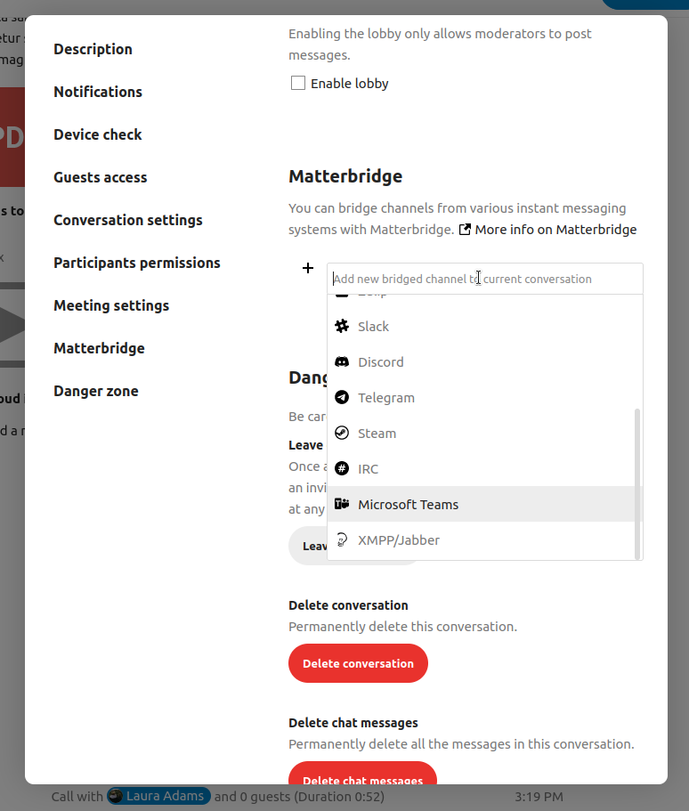

Erweitere Talk-Funktionen
Nextcloud Talk verfügt über eine Reihe von erweiterten Funktionen, die Benutzer möglicherweise nützlich finden.
Matterbridge
Die Matterbridge-Integration in Nextcloud Talk macht es möglich, „Brücken“ zwischen Talk-Unterhaltungen und Unterhaltungen auf anderen Chat-Diensten wie MS Teams, Discord, Matrix und anderen zu erstellen. Eine Liste der unterstützten Protokolle finden Sie auf der Github-Seite von Matterbridge. <https://github.com/42wim/matterbridge#features>`_
Ein Moderator kann in den Chat-Unterhaltungs-Einstellungen eine Matterbridge-Verbindung hinzufügen.

Jede der Brücken benötigt eine eigene Konfiguration. Informationen für die meisten sind im Matterbridge-Wiki verfügbar und können über das Menü Mehr Informationen im ... Menü aufgerufen werden. Sie können auch direkt auf das Wiki zugreifen.
Lobby
Mit der Lobby-Funktion können Sie den Gästen einen Wartebildschirm zeigen, bis der Anruf beginnt. Dies ist z. B. ideal für Webinare mit externen Teilnehmern.

Sie können festlegen, dass die Teilnehmer dem Anruf zu einem bestimmten Zeitpunkt beitreten, oder wenn Sie die Lobby manuell schließen.
Befehle
Nextcloud ermöglicht es Benutzern, Aktionen mit Hilfe von Befehlen auszuführen. Ein Befehl sieht typischerweise so aus:
/wiki airplanes
Administratoren können Befehle konfigurieren, aktivieren und deaktivieren. Benutzer können den Befehl help verwenden, um herauszufinden, welche Befehle verfügbar sind.
/help

Weitere Informationen finden Sie in der Administrations-Dokumentation für Talk. <https://nextcloud-talk.readthedocs.io/en/stable/commands/>`_
Talk und Dateien
In der Dateien-App können Sie in der Seitenleiste über Dateien chatten und sogar während der Bearbeitung ein Gespräch führen. Sie müssen zuerst dem Chat beitreten.


Sie können dann mit anderen Teilnehmern chatten oder telefonieren, auch wenn Sie mit der Bearbeitung der Datei beginnen.

In Talk wird eine Unterhaltung für die Datei erstellt. Sie können von dort aus chatten oder über das Menü ... oben rechts zu der Datei zurückkehren.

Aufgaben im Chat erstellen oder Aufgaben im Chat teilen
Wenn Deck installiert ist, können Sie das ...-Menü einer Chat-Nachricht verwenden und die Nachricht in eine Deck-Aufgabe verwandeln.


Von Deck aus können Sie Aufgaben in Chat-Gesprächen teilen.